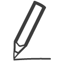

Без фильтра
Активные
Завершённые
×
Справка
Привет!
Я твой новый помощник. Сейчас я немного расскажу о том, что умею:
Добавить задачу
Добавить задачу очень просто. Надо лишь набрать текст задачи и нажать на кнопку
Добавить
Изменить/Удалить
В случае ошибки достаточно нажать на иконку
Редактировать

напротив задачи, и текст задачи можно будет изменить. Или же совсем удалить ненужную задачу, нажав на кнопку
Удалить
Отметить задачу, как сделанную
Отметить задачу, как сделанную, можно нажав на иконку
Сделано
Для удобства вверху есть фильтр, который сортирует все задачи на выполненные и нет
Сделать все/Отметить сделанное
Отметить все задачи как сделанные можно, кликнув на иконке
Сделать все
или же наоборот команда
Отменить сделанное
сделает все задачи незавершенными
Сохранить список в файл
Кнопка
Сохранить в файл
сохранит список активных задач в текстовый файл